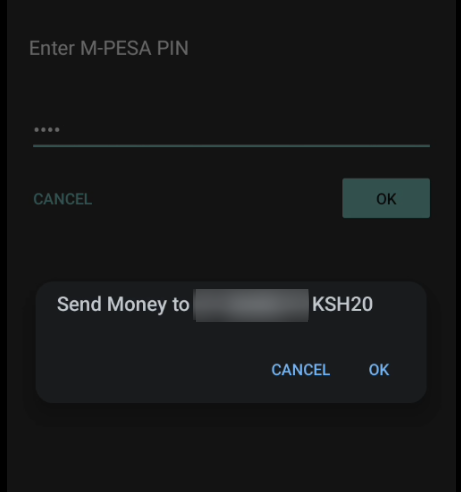
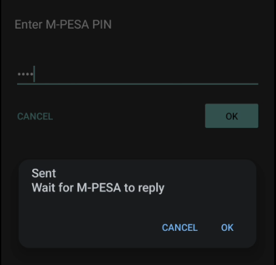
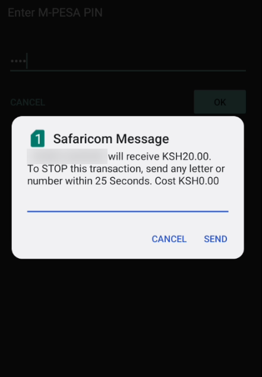
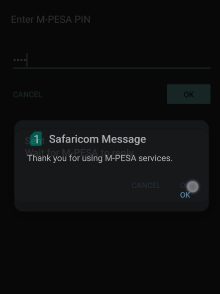

The bizarre and bewildering UX of Android's SIM Toolkit and USSD
M-Pesa, the world's leading mobile money service, has bizarre UX when you're using it on Android. This is nothing new, and users have adapted to the bewildering UX. Most Kenyans would relate to this, but they wouldn't see what the fuss of this blog post is all about.
Although there's an app on the playstore, most people still use SimToolKit (anecdotal claim) - probably because the app needs a working internet connection to function and SimToolKit comes pre-installed on the phone. When you're sending money or paying with M-Pesa using the SimToolKit, this is the sequence of events after you've input all the requisite details:
A window appears with the phone number/till number/pay bill details and the amount you're about to send. To proceed, one presses "OK". "CANCEL" cancels the transaction. We'll call this window "ConfirmNumber".

Figure 1: Confirming transaction number details
When you click "OK", the next window appears, we'll call this window "Sent":

Figure 2: Sent
Whether you press "CANCEL" or "OK" at this point doesn't make a difference. Both options simply dismiss the window without actually doing anything. If you ignore it, you still get to the next step. Forebodingly, it does say "Wait for M-PESA to reply".
Next, a network-initiated USSD push causes a window to appear. We'll call this window "ConfirmName". The ConfirmName window overlays over the "Sent" window, if you hadn't dismissed it. In fact, because it's USSD, it overlays over everything and you can't do anything with your phone until you act on it. It practically acts as a lock screen. More on this later.

Figure 3: Confirming transaction name details
This window shows you the name of the person or business you're sending money to and the amount you're about to send/pay. If you cancel the transaction at this point, you get a text message that confirms the cancellation. The message states, in part: "Kindly note that if you cancel 5 times, you will be barred from using M-PESA". It also shows you your balance.
ConfirmName has two buttons, "CANCEL" and "OK". The "CANCEL" button is absolutely useless at this point. All it does is dismiss the window, it doesn't actually cancel the transaction.
To cancel the transaction, one sends "any letter or number" within 25 seconds - so you only need the "OK" button. If you don't want to cancel the transaction, you can press "OK" without any input or "CANCEL".
Window ConfirmName sometimes appears so fast it overlays window Sent before you can interact with window Sent. Sometimes there's a bit of delay. Since it appears suddenly and overlays anything on your phone, sometimes you end up hitting "SEND" or "CANCEL" on window ConfirmName inadvertently when it appears just as you're about to tap something else (e.g on window Sent). When this happens to you several times, you have to train yourself to not tap your phone until window ConfirmName appears. That's just how it works.
If you want to proceed with the transaction and you proceed by tapping either "CANCEL" or "SEND" without any input, window ConfirmName disappears. At this point you're back to window "Sent", if you hadn't gotten rid of it. So then you might want to click on "CANCEL" or "OK" on window Sent. But just as your finger is about to make contact, another window (we'll call it Thanks) will appear in a flash:

Figure 4: Thanks
You can actually see that the "OK" button on this window is positioned almost where the "OK" button on the window Sent is, so you'll end up clicking on it and it will disappear just as quickly as it appeared. For first-time users of SimToolKit and/or M-Pesa, this must all be very bewildering.
If you're on Android, you most likely have been interrupted by a network-initiated USSD push. You could be reading, or scrolling through your preferred $SOCIAL_MEDIA, or about to call $EMERGENCY_NUMBER, when a window that looks like this will literally take over your phone.

Figure 5: Thanks
This one I initiated for illustration purpose. I get a bunch of these that claim I've subscribed to some service or some such nonsense. It's premium spam right in your face and there's nothing you can do about it. Flash messages have similar behavior - they take over your phone and there's nothing you can do about it. Thankfully, I am yet to see them being abused commercially.
It is not only impossible to ignore these windows, since they overlay anything else on your screen, but you also can't navigate away from it. You have to click either "CANCEL" or "SEND". The user is forced to deal with this one window to move on with their life. If you press your home button or back button, your phone will act like it normally does, except all this will be happening behind the USSD prompt. In CSS speak, these windows always have the maximum z-index.
A common use-case for network-initiated USSD push is STK Push, which some supermarkets use. They ask for your number, and you get a prompt where all you need to input is your PIN. Maddeningly, your PIN is visible in this window - I guess because there's no way for the UI to have hidden input fields. So if there's someone behind you in line you have to try and turn your phone away to hide your PIN. Or a CCTV camera.
If you get the number wrong, some other poor soul will probably get a window
that will take over their phone. That's just the way it is. A friend of mine
with a diabolical imagination points out that STK Push could be used for debt
collection since there doesn't seem to be rate-limiting. while balance > 0:...